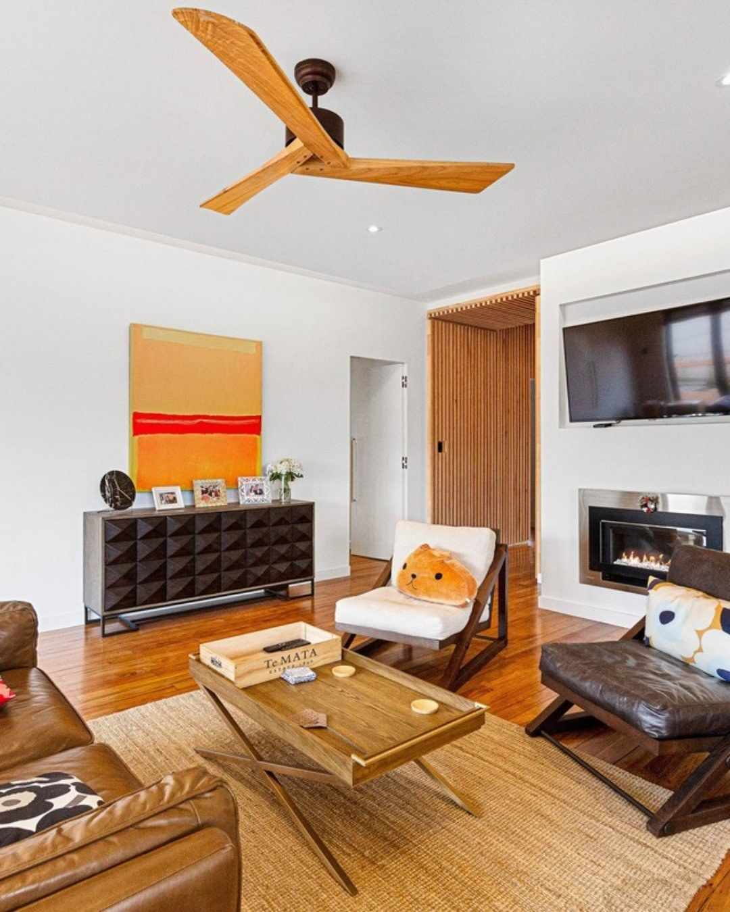

Japandi Interior Design · Sydney
Japanese living,
made for Australia.
NAMI STUDIO is a Sydney interior design studio led by Japanese-born designer Nanami Ura. We design homes and shops & offices with the quiet warmth of Japan — hinoki, shoji, tatami and washi — and take you from first idea to finding your builder.
Why NAMI
The same care, for every space.
Born in Japan
Japanese living ideas from the inside — not just a look, but how a space is used every day.
Backed by Japan Homes
20+ years of building experience, trusted trades and quality materials behind every design.
Design to builder
We design, then find and arrange licensed builders for you. One contact, no running around.
Qualified designer
Formally trained in interior design, Japanese gardens and architecture — with real-estate knowledge, so we design with property value in mind.
How we work
Four simple steps.
Talk
A first consultation about your space, how you live or work, and your budget.
Concept
A design concept and mood board, with up to two rounds of changes.
Plan
Layout, materials and details finalised — ready for pricing.
Build-ready
We find your builder and arrange quotes, and stay with you until construction begins.

About the founder
Nanami Ura
Born and raised in Japan, now designing in Sydney. Nanami blends Japanese craft and everyday wisdom with the way Australians love to live — open, bright and connected to the outdoors.
- Certificate of Interior Design & Property Styling
- Certificate in Japanese Garden Design Essentials
- Contemporary Japanese Architecture — The University of Tokyo (UTokyo MOOC)
- NSW Real Estate Certificate of Registration
- Licensed Real Estate Agent, Japan (宅地建物取引士)
- General Construction Induction (White Card)
FAQ
Quick answers.
What is Japandi interior design?
Japandi blends Japanese and Scandinavian design: natural timber, soft neutral colours, low clutter and well-made pieces. We go one step further and bring real Japanese living ideas — hinoki cypress, shoji screens, tatami, washi light and the genkan entry — adapted to Australian homes and businesses.
Do you design homes or businesses?
Both. Homes covers new builds, renovations, single rooms and budget styling. Shops & Offices covers cafés, restaurants, salons, massage and wellness clinics, retail and offices.
Do you build as well as design?
We are designers, not builders. We create the design, then find and arrange licensed builders and trades through Japan Homes' 20+ years of connections — one contact from design until construction begins.
Which areas do you work in?
We are based in Sydney and work across Greater Sydney and NSW. Styling advice can also be done online.
Start a project
Tell us about your space.
Home or business, one room or the whole place — send us a short note and we'll get back to you soon.